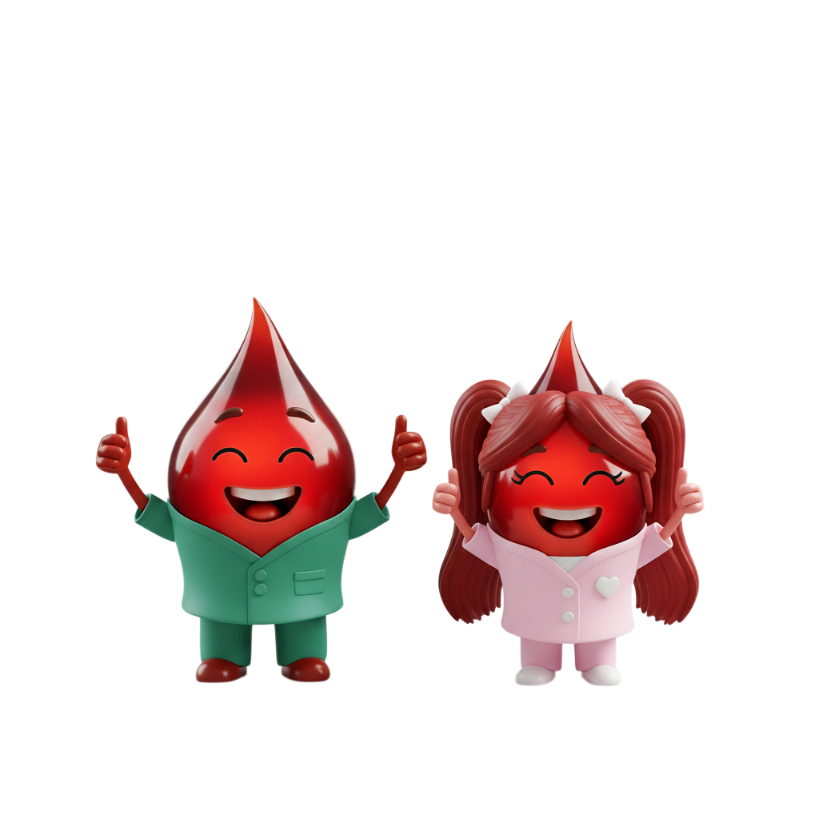
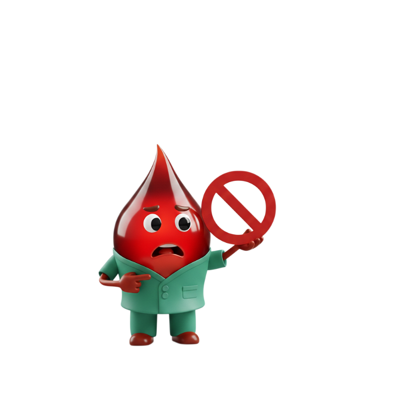
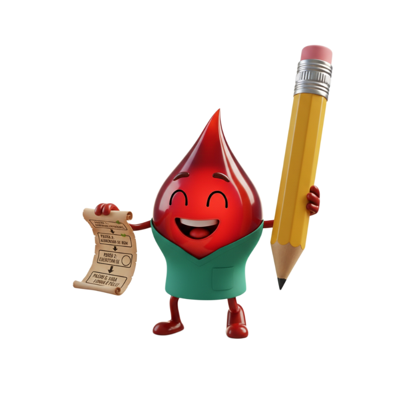
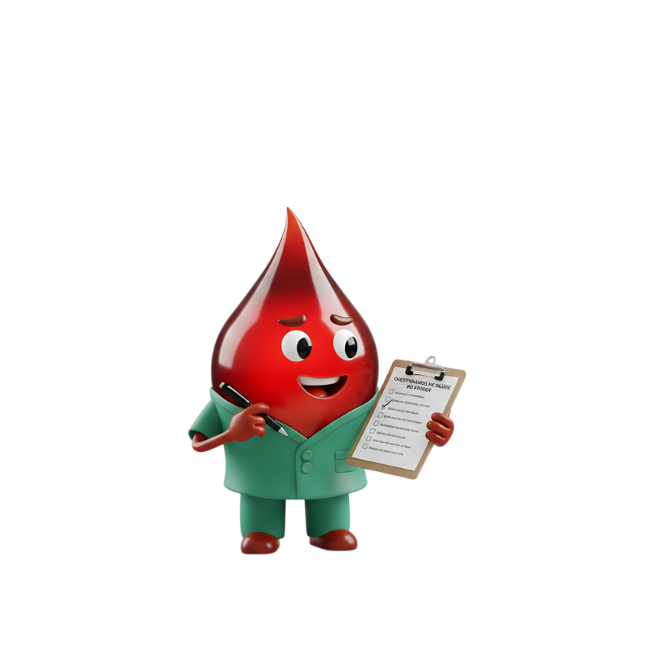
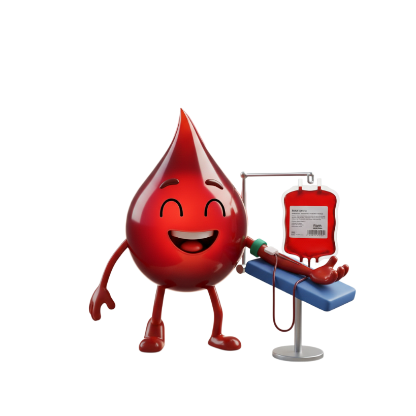
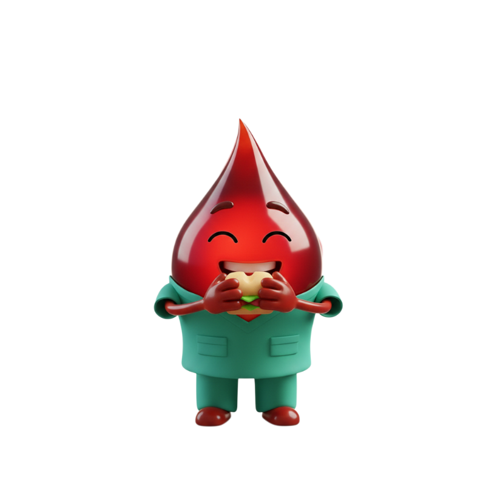
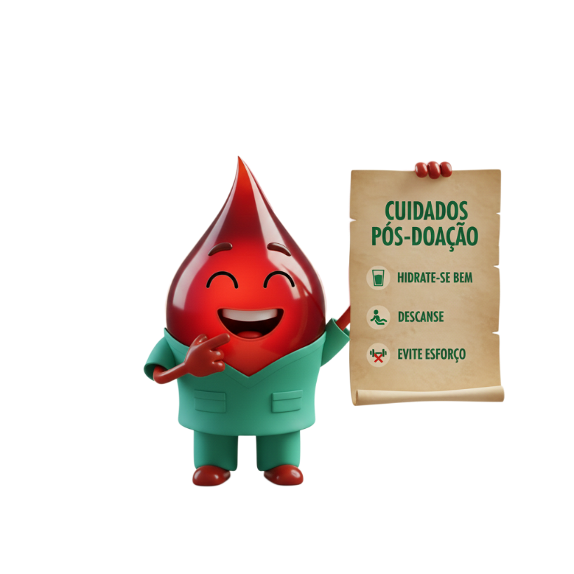
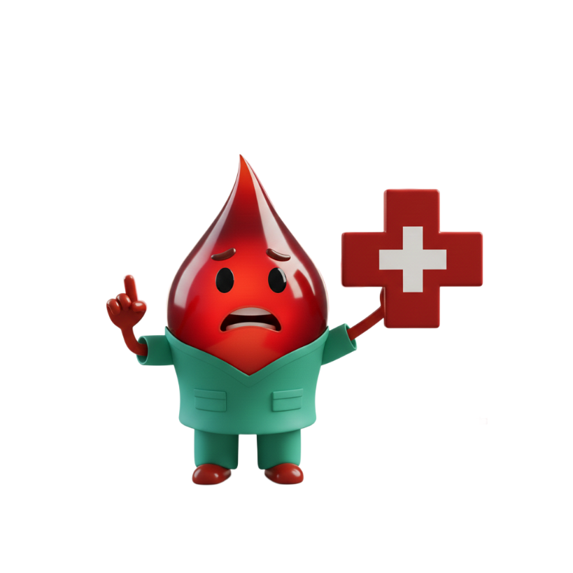
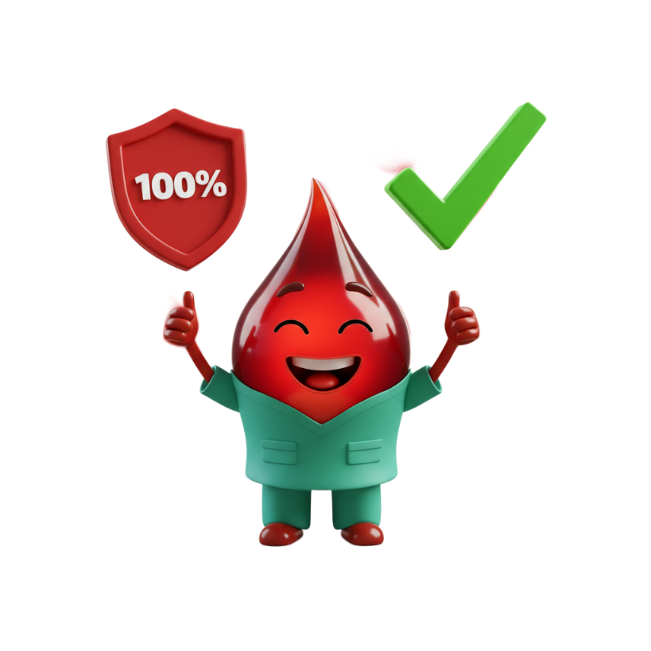
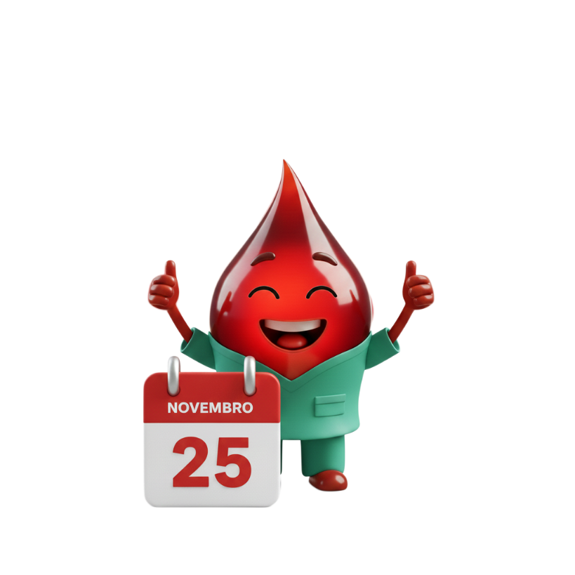

HOMENS E MULHERES
 Ter entre 16 a 69 anosJovens de 16 e 17 anos devem estar acompanhados pelo responsável legal
Idade máxima de 60 anos para a primeira doação
Pesar mais de 50kg
Estar alimentado e não ingerir bebida alcoólica
Repousar no mínimo 6 horas
Não ter estado doente nos últimos 7 dias
Evitar jejum prolongado e alimentos gordurosos
Quantas vezes posso doar no ano?
4 vezes para homens
3 vezes para mulheres
NÃO PODE DOAR QUEM TEVE OU TEM DOENÇAS
HIV e ou IST
Múltiplos parceiros
Diabetes tipo I e II Insulinodependentes
Malária
Câncer
Lepra (Hanseníase)
Doença de Chagas
Fez ou faz uso de drogas e alguns medicamentos
PASSO A PASSO DO DOADOR APÓS CADASTRO NO SITE
Apresentação de um documento original emitido por órgão oficial com foto
TRIAGEM
Verificação de pulso, altura, pressão arterial, temperatura e teste de anemia. Entrevista confidencial e sigilosa.
DOAÇÃO
Em geral, cerca de 450ml de sangue doado, equivale a uma bolsa de sangue que pode salvar até quatro vidas.
DESCANSO E LANCHE
Após a doação você irá se dirigir à sala de lanches.
É recomendável um tempo de permanência de no mínimo 15 minutos.
CUIDADOS PÓS DOAÇÃO
Ingerir bastante liquido
Se estiver dirigindo e passar mal, pare o veiculo
Não fumar por 2 horas
Evitar trabalhar com construção civil (12 horas)
Evite esforços físicos por 12 horas
Manter curativo no local da punção por 4 horas
FIQUE ATENTO
Em caso de hematomas aplicar compressa de gelo 3 vezes ao dia
Se passar mal procure serviço médico ou retorne ao Hemocentro
Caso apresente febre, sintomas infecciosos ou doenças até 30 dias após a doação, entrar em contato com o Hemocentro.
DOAR SANGUE É 100% SEGURO
Todo material é descartável e estéril
São realizados testes laboratoriais (Sífilis, doença de Chagas, Hepatites B e C, AIDS, HTLV I/II e tipagem sanguínea) no seu sangue para a segurança de quem vai receber
VOCÊ SABIA?
25 de novembro é o dia nacional do DOADOR DE SANGUE